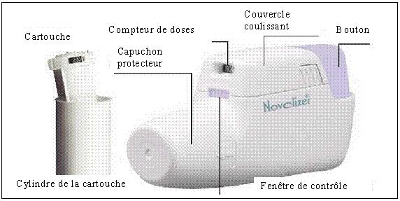

RÉSUMÉ DES CARACTÉRISTIQUES DU PRODUIT
ANSM - Mis à jour le : 10/12/2010
ASMELOR NOVOLIZER 6 microgrammes/dose, poudre pour inhalation
2. COMPOSITION QUALITATIVE ET QUANTITATIVE
Fumarate de formotérol dihydraté.......................................................................................... 6 microgrammes
Pour une dose mesurée
La dose délivrée à l’embout buccal est de 5,1 microgrammes pour 4,18 microgrammes de formotérol.
Pour la liste complète des excipients, voir rubrique 6.1.
Poudre pour inhalation.
Poudre blanche.
4.1. Indications thérapeutiques
La corticothérapie associée devra être maintenue en prises régulières.
Traitement symptomatique de l'obstruction bronchique chez les patients présentant une bronchopneumopathie chronique obstructive (BPCO) et nécessitant un traitement bronchodilatateur de longue durée d'action.
4.2. Posologie et mode d'administration
Voie inhalée.
La prise de doses supplémentaires par rapport à la posologie usuelle plus de 2 jours par semaine, est le signe d’un contrôle insuffisant et le traitement de fond doit alors être réévalué.
Le traitement sera administré en 2 prises par jour.
ASTHME :
Adultes (y compris les personnes âgées) et adolescents de plus de 12 ans :
La posologie usuelle est de 2 inhalations (12 microgrammes) 2 fois par jour. Pour les asthmes sévères, la posologie peut être augmentée jusqu’à 4 inhalations (24 microgrammes) 2 fois par jour.
La dose maximale journalière est de 8 inhalations (4 inhalations 2 fois par jour) correspondant à 48 microgrammes.
Enfants 6 ans et plus :
La posologie usuelle est de 2 inhalations (12 microgrammes) 2 fois par jour. Pour les asthmes sévères, la posologie peut être augmentée jusqu’à 4 inhalations (24 microgrammes) 2 fois par jour, après évaluation par le médecin.
En traitement régulier continu, la dose journalière à ne pas dépasser est de 4 inhalations (24 microgrammes). Toutefois, de façon occasionnelle, elle pourra être portée à 8 inhalations réparties sur une période de 24 heures.
Asmelor Novolizer n’est pas recommandé chez l’enfant de moins de 6 ans en raison de l’insuffisance de données dans cette tranche d’âge.
Le formotérol inhalé est indiqué chez les patients recevant une corticothérapie inhalée lorsqu’un traitement symptomatique continu de l’asthme est nécessaire en plus du corticoïde inhalé.
Bien que le formotérol ait un délai d’action rapide, il convient de réserver l’utilisation des bronchodilatateurs inhalés de longue durée d’action (tel que le formotérol) pour le traitement symptomatique continu de fond seulement en prise régulière.
Le formotérol n’est pas destiné au traitement des crises d’asthme. En cas de crise d’asthme, un agoniste b2 de courte durée d’action doit être utilisé.
Les patients doivent être avertis de ne pas arrêter ou modifier leur traitement corticoïde associé lorsque le traitement par Asmelor Novolizer est instauré.
BRONCHOPNEUMOPATHIE CHRONIQUE OBSTRUCTIVE (BPCO) :
Adultes (y compris les personnes âgées) et adolescents de plus de 12 ans :
La posologie usuelle en traitement régulier continu est de 2 inhalations (12 microgrammes) deux fois par jour.
La dose journalière usuelle à ne pas dépasser en traitement régulier continu est de 4 inhalations (24 microgrammes). Toutefois, si besoin, des inhalations supplémentaires à la posologie usuelle prescrite dans le cadre du traitement régulier continu peuvent être prises pour soulager les symptômes, sans toutefois dépasser la dose totale maximale de 8 inhalations par jour (soit 48 microgrammes pour le traitement continu et les inhalations supplémentaires comprises). A chaque prise, ne pas dépasser plus de 4 inhalations.
Populations spécifiques :
Aucun ajustement posologique n’est nécessaire chez les patients âgés ou les insuffisants rénaux ou hépatiques (voir rubrique 4.4).
Modalités du traitement
Afin d’assurer une diffusion intrabronchique optimale du principe actif, l’inhalation devra être réalisée avec un flux régulier en inspirant aussi profondément et rapidement que possible (jusqu’à l’amplitude d’inspiration maximale). Le dispositif est muni d’un système signalant par un déclic audible et un changement de couleur de la fenêtre de contrôle si l’inhalation a été effectuée correctement.
Si le dispositif ne signale pas par un déclic et un changement de couleur de la fenêtre de contrôle que l’inhalation a été réalisée correctement, le patient devra renouveler l’inhalation.
L’inhalateur reste bloqué jusqu’à ce que l’inhalation soit effectuée correctement.
Instructions pour l’utilisation et la manipulation
|
 |
Rechargement
Appuyer légèrement sur les surfaces nervurées situées des 2 côtés du couvercle, pousser celui-ci vers l’avant et le retirer.
Retirer le film protecteur en aluminium du boîtier de la cartouche et prélever une cartouche neuve.
Insérer la cartouche dans le Novolizer, en orientant le compteur de doses face à l’embout buccal.
Replacer le couvercle dans ses guides latéraux et le pousser horizontalement vers le bouton jusqu’à ce qu’il s’insère dans son logement. La cartouche peut être laissée dans l’inhalateur Novolizer jusqu’à ce qu’elle soit vide ou durant 6 mois au maximum après insertion.
Remarque : les cartouches d’Asmelor Novolizer 6 microgrammes ne peuvent être utilisées qu’avec l'inhalateur de poudre Novolizer.
Mode d’emploi du dispositif
1. Pour l’inhalation, il est préférable d’être assis ou debout. Lors de l’utilisation du dispositif Novolizer, toujours tenir ce dernier horizontalement. D’abord retirer le capuchon protecteur.
2. Appuyer à fond sur le bouton coloré. On perçoit alors un double déclic sonore et la couleur de la fenêtre de contrôle (en bas) passe du rouge au vert. Ensuite, relâcher le bouton coloré. La couleur verte dans la fenêtre indique que le Novolizer est prêt à l’emploi.
3. Expirer à fond (hors de l’inhalateur)
4. Fermer les lèvres autour de l’embout buccal. Inhaler la poudre par une inspiration profonde. Pendant cette inhalation, on doit entendre un déclic sonore prouvant que l’inhalation a été correctement effectuée. Retenir sa respiration pendant quelques secondes puis respirer normalement.
Remarque : si le patient a besoin de plusieurs inhalations, répéter les étapes 2 à 4.
5. Replacer le capuchon protecteur sur l’embout buccal. L’inhalation est maintenant terminée.
6. Le chiffre qui apparaît dans la fenêtre supérieure indique le nombre de doses restantes, de 10 en 10 de 60 à 0 doses restantes.
Remarque : il ne faut appuyer le bouton coloré qu’immédiatement avant l’inhalation.
Avec le dispositif Novolizer, l’inhalation involontaire d’une double dose est impossible. Le clic sonore et le changement de couleur dans la fenêtre de contrôle indiquent que l’inhalation a été effectuée correctement. Si la couleur de la fenêtre de contrôle demeure inchangée, il faut recommencer l’inhalation. Si l’inhalation n’est pas effectuée correctement après plusieurs tentatives, le patient doit consulter son médecin.
Nettoyage
Le dispositif Novolizer doit être nettoyé à intervalles réguliers et au minimum lors de chaque changement de cartouche. Pour connaître les instructions concernant le nettoyage de l’appareil, se référer à la notice d’utilisation contenue dans la boîte.
Remarque : afin d’assurer une utilisation correcte de l’inhalateur, il convient d’expliquer clairement aux patients le mode d’emploi de l’appareil. Lors de l’utilisation de ce médicament chez l’enfant, il conviendra de s’assurer qu’un adulte surveille l’administration du médicament.
· Hypersensibilité (allergie) connue au principe actif ou au lactose (qui peut contenir des protéines de lait).
4.4. Mises en garde spéciales et précautions d'emploi
Asmelor Novolizer 6 microgrammes ne doit pas être utilisé (et n’est pas suffisant) en traitement de première intention dans l’asthme.
Les patients asthmatiques nécessitant un traitement par des médicaments bêta-2-agonistes de longue durée d’action doivent également recevoir un traitement de fond anti-inflammatoire adapté par corticoïdes. Les patients devront être informés qu’ils doivent poursuivre leur traitement anti-inflammatoire et ne pas diminuer la dose sans avis médical après l’instauration du traitement par Asmelor Novolizer 6 microgrammes, même lorsque les symptômes diminuent. La persistance des symptômes ou leur aggravation, ou l’augmentation des doses de médicament bêta-2 agoniste nécessaire pour contrôler les symptômes traduisent une aggravation de la maladie, ce qui doit conduire à une réévaluation du traitement par un médecin.
Bien qu’il puisse être utilisé en traitement additif lorsque la corticothérapie inhalée n’apporte pas un contrôle suffisant des symptômes d’asthme, Asmelor Novolizer ne doit pas être initié pendant une exacerbation sévère d’asthme, une aggravation significative ou une déstabilisation aiguë de l’asthme.
Des évènements indésirables graves liés à l’asthme et des exacerbations peuvent survenir au cours d’un traitement par Asmelor Novolizer. Les patients devront être informés que si les symptômes d’asthme persistent ou s’aggravent au cours d’un traitement par Asmelor Novolizer, ils doivent continuer leur traitement et prendre avis auprès de leur médecin.
Dès que les symptômes d’asthme sont contrôlés, une diminution progressive de la dose d’Asmelor Novolizer doit être envisagée. Il est important que les patients soient suivis régulièrement lors de la phase de réduction du traitement. La dose minimale efficace d’Asmelor Novolizer doit être utilisée.
Le formotérol doit être réservé au traitement des patients nécessitant un traitement symptomatique régulier continu par bronchodilatateur de longue durée d’action (voir rubrique 4.1) et ne doit pas être utilisé comme alternative aux bêta-2 agonistes de courte durée d’action qui sont destinés à traiter les symptômes aigus d’une crise d’asthme. En cas de crise d’asthme, il faut utiliser un médicament bêta-2 agoniste de courte durée d’action.
La posologie journalière maximale préconisée ne doit pas être dépassée. La tolérance à long terme d’un traitement régulier à une dose journalière dépassant 8 inhalations par jour chez l’adulte et 4 inhalations par jour chez l’enfant ou 4 inhalations par jour chez les patients atteints de bronchopneumopathie chronique obstructive (BPCO), n’a pas été établie.
Le recours fréquent au traitement médicamenteux pour prévenir les symptômes d’asthme déclenchés par l’effort peut être le signe d’un contrôle insuffisant de la maladie. Le médecin devra alors réévaluer la conduite thérapeutique et s’assurer de l’observance du traitement. Si le patient doit avoir recours plusieurs fois par semaine à son traitement pour prévenir la survenue des symptômes d’asthme déclenchés par l’exercice, malgré un traitement de fond adapté (corticoïdes et agonistes bêta-2 de longue durée d’action), la conduite thérapeutique globale sera réévaluée par un spécialiste.
La prudence est recommandée chez les patients présentant une thyrotoxicose, un phéochromocytome, une cardiomyopathie obstructive, une sténose aortique sous-valvulaire idiopathique, une hypertension artérielle sévère, un anévrisme ou d’autres troubles cardio-vasculaires sévères telles qu’une cardiopathie ischémique, une tachyarythmie, en particulier un bloc auriculoventriculaire de 3ème degré, ou une insuffisance cardiaque sévère. Un ajustement de la posologie peut être nécessaire.
Le formotérol peut entraîner un allongement de l’intervalle QTc. La prudence est recommandée chez les patients présentant un allongement de l’intervalle QTc (voir rubrique 4.5).
En raison des effets hyperglycémiants des bêta-2 agonistes, il est recommandé de renforcer la surveillance de la glycémie en début du traitement chez les diabétiques.
Un traitement par bêta-2 agoniste peut entraîner une hypokaliémie potentiellement grave. La prudence est recommandée particulièrement en cas d’asthme aigu sévère, car les risques associés peuvent être augmentés par l’hypoxie. L’effet hypokaliémiant peut être potentialisé par l’administration concomitante de dérivés xanthiques, de corticoïdes et de diurétiques. Il faut donc surveiller la kaliémie dans ces situations. Une attention particulière est nécessaire lors de l’utilisation concomitante de théophylline et de formotérol chez les patients présentant une maladie cardiaque préexistante.
Comme pour les autres traitements en inhalation, l’administration du produit peut entraîner un bronchospasme paradoxal. La survenue de sifflements ou d’une dyspnée suivant l’inhalation doit être traitée rapidement avec un bronchodilatateur inhalé d’action rapide. Le traitement par Asmelor Novolizer devra alors être immédiatement interrompu et un traitement alternatif doit être instauré s’il s’avère nécessaire, après évaluation par le médecin.
Asmelor Novolizer 6 microgrammes contient 5,744 mg de lactose par dose délivrée. En général, ces faibles doses n’entraînent pas de conséquences néfastes chez les patients intolérants au lactose. Le lactose peut contenir en faibles quantités des protéines du lait.
L’utilisation du formotérol n’est pas recommandée chez les enfants de moins de 6 ans en raison de l’insuffisance de données pour cette tranche d’âge.
La pharmacocinétique du formotérol n’a pas été étudiée chez le sujet âgé et en cas d’insuffisance hépatique ou rénale. Le formotérol étant essentiellement métabolisé par voie hépatique, une majoration de l’exposition systémique est attendue chez les patients atteints de cirrhose hépatique sévère.
4.5. Interactions avec d'autres médicaments et autres formes d'interactions
Aucune étude d’interaction spécifique n’a été conduite avec Asmelor Novolizer.
Un traitement concomitant avec d’autres agents sympathomimétiques tels que les autres bêta-2 agonistes ou l’éphédrine peut potentialiser les effets indésirables du formotérol et peut nécessiter une diminution de la posologie.
Un traitement concomitant par des dérivés xanthiques, des corticoïdes ou des diurétiques tels que les diurétiques thiazidiques et les diurétiques de l’anse, risque d’aggraver l’effet hypokaliémiant des agonistes b2. L’hypokaliémie augmente le risque d’arythmie chez les patients recevant des glycosides digitaliques.
Un traitement concomitant avec des corticoïdes par voie orale peut augmenter les effets hyperglycémiants.
Il existe un risque théorique qu’un traitement concomitant avec d’autres substances connues pour allonger l’intervalle QTc puisse entraîner une interaction pharmacodynamique avec le formotérol et augmenter le risque d’arythmie ventriculaire. Ces substances peuvent être par exemple : certains antihistaminiques (tels que terfénadine, astémizole, mizolastine), certains antiarythmiques (tels que quinidine, disopyramide, procaïnamide), les phénothiazines, l’érythromycine, les antidépresseurs tricycliques.
Le prudence est recommandée lors de l’administration de formotérol chez les patients traités par des inhibiteurs de la monoamine oxydase (ou ayant été traités dans les 14 jours précédents) ou des antidépresseurs tricycliques, en raison du risque de potentialisation de leur action bêta-2 adrénergique sur le système cardiovasculaire.
D’autre part, la L-dopa, la L-thyroxine, l’ocytocine et l’alcool peuvent perturber la tolérance cardiaque des bêta-2 agonistes.
Chez les patients recevant de façon concomitante un anesthésique volatil halogéné, le risque de survenue d’une arythmie est augmenté.
Les bêta-bloquants peuvent réduire ou neutraliser complètement l’effet du formotérol. Sauf si nécessité absolue, l’association de formotérol et d’un traitement bétabloquant (même sous forme de collyre), est déconseillée.
Grossesse :
L’expérience clinique acquise chez des femmes enceintes est limitée.
Dans les études menées chez l’animal, le formotérol a entraîné des défauts d’implantation ainsi qu’une diminution de la survie postnatale et du poids à la naissance. Ces effets sont apparus à des expositions systémiques considérablement plus élevées que celles atteintes lors de l’utilisation clinique du formotérol.
En l’état actuel des données, sauf s’ils ne sont pas accessibles, il est préférable de choisir les traitements alternatifs dont la sécurité pendant la grossesse est clairement établie, notamment pendant les trois premiers mois de grossesse, peu avant l’accouchement et pendant le travail.
Comme pour tout médicament, l’utilisation pendant la grossesse ne doit être considérée que si le bénéfice attendu chez la mère l’emporte sur les risques encourus chez le fœtus.
Allaitement
Le passage du formotérol dans le lait maternel est inconnu. Chez le rat, de petites quantités de formotérol ont été détectées dans le lait maternel. L'administration de formotérol chez les femmes qui allaitent est déconseillée.
4.7. Effets sur l'aptitude à conduire des véhicules et à utiliser des machines
Le formotérol n’a pas d’effet, ou un effet négligeable, sur l’aptitude à conduire des véhicules ou à utiliser des machines.
Les effets indésirables les plus fréquents tels que tremblements et palpitations sont modérés et disparaissent après quelques jours de traitement.
Fréquents (1 à 10 %) :
Troubles cardio-vasculaires : palpitations.
Troubles du système nerveux : céphalées, tremblements.
Peu fréquents (0,1 à 1 %) :
Troubles cardio-vasculaires : tachycardie.
Troubles musculo-squelettiques et du tissu conjonctif : crampes musculaires.
Troubles psychiatriques : agitation, nervosité, troubles du sommeil.
Troubles respiratoires : irritation oropharyngée.
Rares (0, 01 à 0,1 %) :
Troubles cardio-vasculaires : arythmies cardiaques telles que fibrillation auriculaire, tachycardie supraventriculaire, extrasystoles.
Troubles gastro-intestinaux : nausées.
Troubles du système immunitaire : réactions d’hypersensibilité telles que bronchospasmes, exanthèmes, urticaires, prurit, œdème de Quincke.
Troubles du métabolisme et de la nutrition : hypokaliémie, hyperkaliémie.
Troubles du système nerveux : hyperexcitabilité.
Très rares (< 0, 01 %) :
Troubles cardio-vasculaires : angine de poitrine.
Examens d’investigation : allongement de l’espace QTc.
Troubles du métabolisme et de la nutrition : hyperglycémie.
Troubles du système nerveux : trouble du goût, sensations vertigineuses.
Troubles vasculaires : variation de la pression artérielle.
Rarement : comme pour tout traitement par inhalation, l’administration du produit peut entraîner un bronchospasme paradoxal.
Le traitement par des agonistes bêta-2 peut induire une augmentation des taux sanguins d’insuline, d’acides gras libres, de glycérol et de corps cétoniques.
L’expérience clinique du traitement du surdosage est limitée.
En cas de surdosage, on peut s’attendre aux effets typiques des agonistes bêta-2 : tremblement, céphalée, palpitations.
Dans des cas isolés, ont été rapportés : tachycardie, hyperglycémie, hypokaliémie, allongement de l’intervalle QTc, arythmie, nausées et vomissements. Le traitement sera symptomatique avec maintien des fonctions vitales.
L’utilisation de b-bloquants cardiosélectifs ne pourra être envisagée qu’avec une extrême prudence, car ils peuvent provoquer un bronchospasme. La kaliémie devra être surveillée.
5. PROPRIETES PHARMACOLOGIQUES
5.1. Propriétés pharmacodynamiques
Classe pharmacothérapeutique : agonistes b2 sélectifs, formotérol
Code ATC : R03AC13
Le formotérol est un agoniste sélectif des récepteurs bêta-2 adrénergiques qui entraîne une relaxation des muscles lisses bronchiques. Il exerce un effet bronchodilatateur chez les patients présentant une obstruction réversible des voies respiratoires. L’effet bronchodilatateur survient rapidement, en 1 à 3 minutes après l’inhalation, et persiste en moyenne 12 heures après l’inhalation de la dose.
5.2. Propriétés pharmacocinétiques
Absorption
Le formotérol inhalé est rapidement absorbé. La concentration plasmatique maximale est atteinte environ 10 minutes après l’inhalation.
Des études cliniques montrent qu’après l’inhalation à l’aide du dispositif Novolizer, le dépôt de formotérol dans les poumons est comparable à celui qui est obtenu avec les autres inhalateurs de formotérol.
Distribution et métabolisme
Le taux de liaison aux protéines plasmatiques est d’environ 50 %.
Le formotérol est directement métabolisé par une glucuronidation et une O-déméthylation.
L’enzyme responsable de la O-déméthylation n’est pas identifiée. Ni la clairance plasmatique totale, ni le volume de distribution n’ont été déterminés.
Elimination
La majeure partie de la dose de formotérol est éliminée par métabolisation. Après inhalation à l’aide d’un dispositif similaire, 8-13 % de la dose de formotérol délivrée ont été excrétés sous forme de formotérol non métabolisé dans les urines. Environ 20 % d’une dose intraveineuse sont excrétés sous forme inchangée dans les urines. La demi-vie terminale après inhalation est estimée à 8 heures.
5.3. Données de sécurité préclinique
Dans les études de toxicité menées chez le rat et le chien, le formotérol a essentiellement provoqué des effets cardio-vasculaires à type d’hyperémie, de tachycardie, d’arythmies et de lésions myocardiques. Ces phénomènes sont des manifestations pharmacologiques connues de l’administration de doses fortes de bêta-2 agonistes. .
Dans les études animales, le formotérol a induit des défauts d’implantation ainsi qu’une diminution de la survie postnatale et du poids à la naissance. Les effets sont survenus à des expositions systémiques considérablement plus importantes que celles qui sont atteintes lors de l’utilisation clinique du formotérol. Chez des rats mâles soumis à une importante exposition systémique au formotérol, on a constaté une légère réduction de la fertilité.
Les études menées in vitro et in vivo n’ont pas montré d’effets génotoxiques du formotérol. Chez le rat et la souris, on a constaté une légère augmentation de l’incidence des léiomyomes utérins bénins. On considère qu’il s’agit là d’un effet de classe observé chez les rongeurs après une exposition prolongée à de fortes doses de bêta-2 agonistes.
Sans objet.
Durée de conservation avant l’ouverture du conditionnement : 3 ans.
Durée de conservation après l’ouverture de la cartouche : 6 mois.
Inhalateur Novolizer
Durée de conservation avant la première utilisation : 4 ans.
Durée de conservation en cours d’utilisation : 1 an.
Note : Le fonctionnement du Novolizer a été validé par des tests portant sur 2000 doses unitaires. Ce nombre de doses ne devrait pas être dépassé en 1 an dans les conditions normales d’utilisation.
6.4. Précautions particulières de conservation
A conserver dans l’emballage extérieur d’origine.
Après la première ouverture du conditionnement de la cartouche, conserver à une température ne dépassant pas 25°C, à l’abri de l’humidité.
6.5. Nature et contenu de l'emballage extérieur
L’inhalateur (embout buccal) est constitué de polyéthylène et les cartouches sont en polystyrol.
Conditionnement :
60 doses en cartouche (Polystyrène/Polypropylène) ; boîte de 1 ou 2 avec inhalateur.
Conditionnement de recharge :
60 doses en cartouche (Polystyrène/Polypropylène) ; boîte de 1, 2, 3.
Conditionnement hospitalier :
60 doses en cartouche (Polystyrène/Polypropylène) ; boîte de 10 avec inhalateur.
Toutes les présentations peuvent ne pas être commercialisées.
6.6. Précautions particulières d’élimination et de manipulation
Voir rubrique 4.2.
7. TITULAIRE DE L’AUTORISATION DE MISE SUR LE MARCHE
MEDA PHARMA
25, boulevard de l’amiral bruix
75016 paris
8. NUMERO(S) D’AUTORISATION DE MISE SUR LE MARCHE
· 376 723-9 ou 34009 376 723 9 9 : 60 doses en cartouche (Polystyrène/Polypropylène) ; boîte de 1.
· 376 724-5 ou 34009 376 724 5 0 : 60 doses en cartouche (Polystyrène/Polypropylène) ; boîte de 2.
· 498 916-6 ou 34009 498 916 6 5 : 60 doses en cartouche (Polystyrène/Polypropylène) ; boîte de 2 avec inhalateur.
· 376 725-1 ou 34009 376 725 1 1 : 60 doses en cartouche (Polystyrène/Polypropylène) ; boîte de 3.
· 569 880-9 ou 34009 569 880 9 9 : 60 doses en cartouche (Polystyrène/Polypropylène) ; boîte de 10 avec inhalateur.
9. DATE DE PREMIERE AUTORISATION/DE RENOUVELLEMENT DE L’AUTORISATION
[à compléter par le titulaire]
10. DATE DE MISE A JOUR DU TEXTE
[à compléter par le titulaire]
Sans objet.
12. INSTRUCTIONS POUR LA PREPARATION DES RADIOPHARMACEUTIQUES
Sans objet.
Liste I.